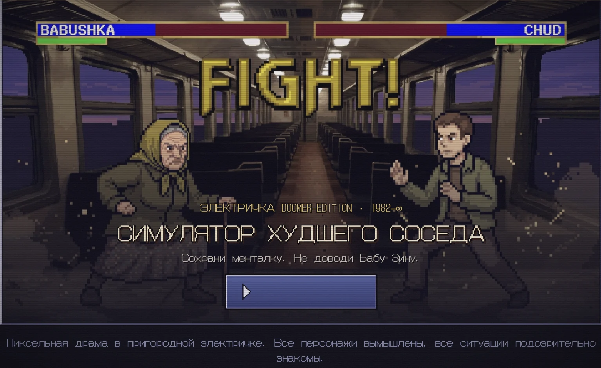
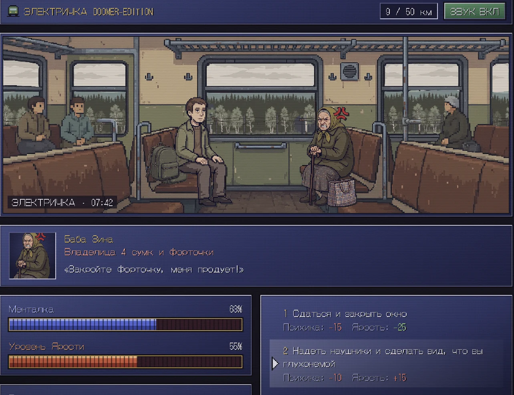
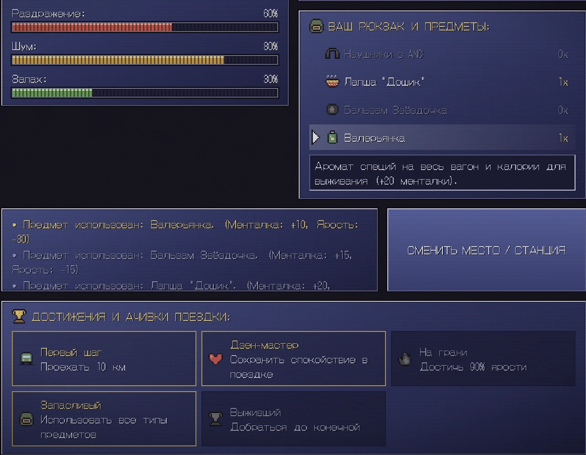
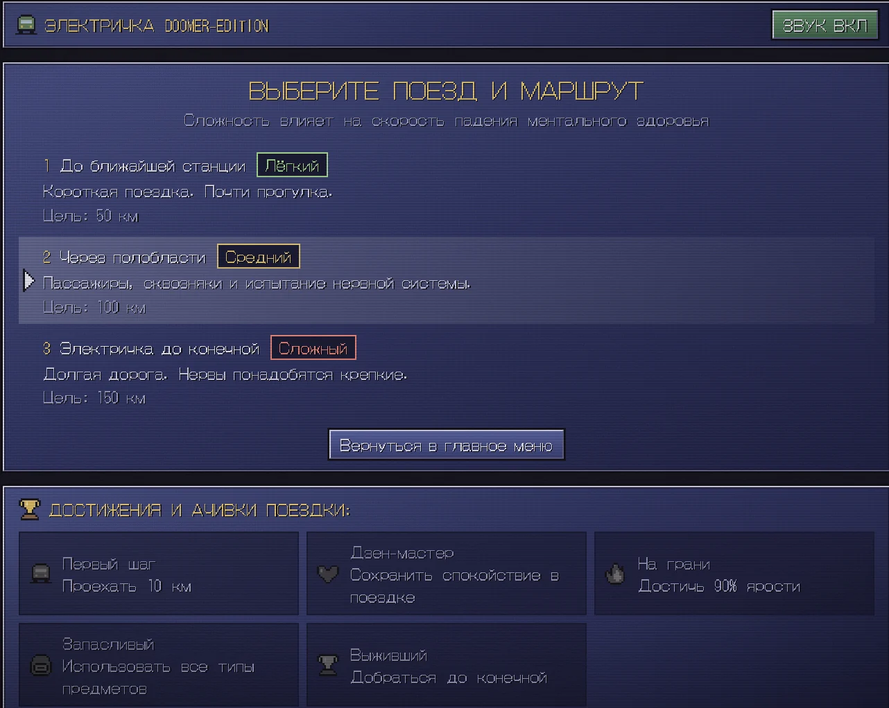
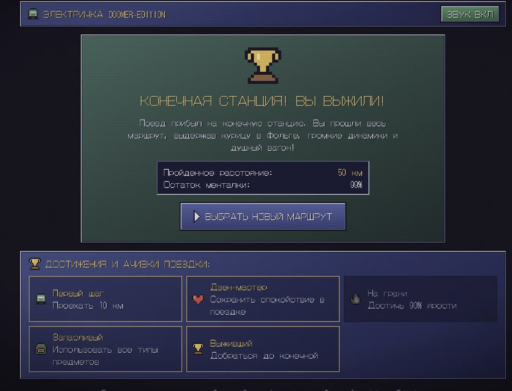

№ 004 · SOSED.EXE
Симулятор худшего соседа
Пиксельная драма в пригородной электричке — в духе игр нулевых для PlayStation
- Роль
- Автор проекта: идея, визуальное направление, моушн в After Effects
- Тип
- Личный проект
- Статус
- Завершён
- Инструменты
- After Effects · React · Vite · Pixel art
01 Контекст и цели
Личный игровой проект: моя идея и визуальное направление. «Электричка doomer-edition · 1982–∞» — пиксельная драма в пригородной электричке. «Все персонажи вымышлены, все ситуации подозрительно знакомы».
02 Задача
Превратить узнаваемую поездку на электричке в игру, где смешно с первого экрана, а каждая бытовая мелочь становится игровой механикой.
03 Концепция и визуальный стиль
Визуальное направление — пиксельная игра нулевых для PlayStation: пиксель-арт, шкалы, рамки, ачивки и титульный экран «FIGHT!», как в файтингах той эпохи.
Юмор строится на гиперболизации бытовых ситуаций постсоветской электрички. Баба Зина — «владелица 4 сумок и форточки» — требует закрыть окно, сосед ест курицу в фольге, динамики орут, вагон душный. Игрок выбирает, как реагировать, и платит за это нервами.
Интерфейс намеренно архаичный: никаких эмодзи, прыгающих иконок и других современных деталей.
04 Ключевые UX/UI-решения
Выбор с ценой
Каждый ответ в диалоге сразу показывает последствия: «Психика −15, Ярость −25». Решение — это компромисс, а не угадывание правильного варианта.
Шкалы вместо текста
Менталка и Уровень ярости, а рядом раздражение, шум и запах — состояние героя считывается одним взглядом.
Рюкзак выживания
Наушники с ANC, лапша «Дошик», бальзам «Звёздочка», валерьянка — у каждого предмета свой эффект, а лог показывает, что именно изменилось.
Маршрут = сложность
Три маршрута: до ближайшей станции, через полобласти, до конечной. Чем длиннее дорога, тем быстрее падает менталка.
Два состояния персонажа
У персонажей есть обычное и злое состояние — злость Бабы Зины видно по портрету ещё до того, как она заговорит.
Ачивки поездки
«Первый шаг», «Дзен-мастер», «На грани», «Запасливый», «Выживший» — повод проехать маршрут ещё раз и по-другому.
05 Экраны, макеты и адаптив










06 Видео и анимация
07 Реализация
- Ролики поездки собраны и отрендерены в After Effects: интерьер вагона и пейзаж — отдельные слои, пейзаж прокручивается за окнами.
- Игра — React + Vite.
- Сцена собрана из слоёв: неподвижный интерьер вагона и пейзаж за окнами, который прокручивается отдельно — ощущение поездки без анимации всей сцены.
- Переключатель звука в шапке, счётчик пройденных километров и время в кадре — как в игровом HUD.